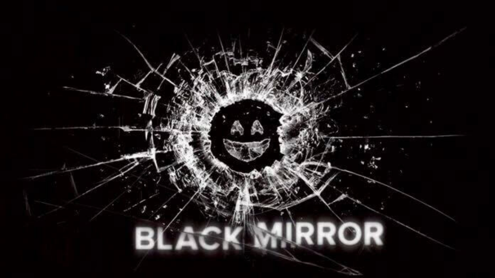
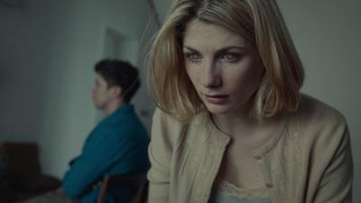
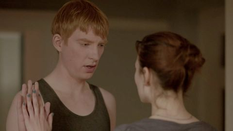
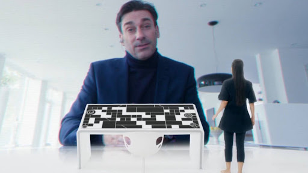
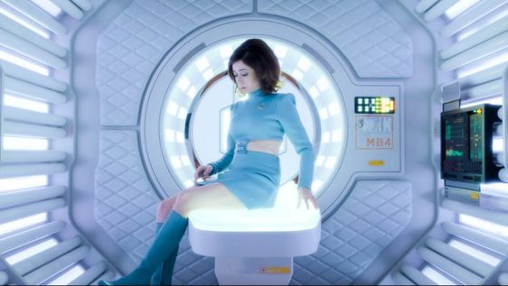
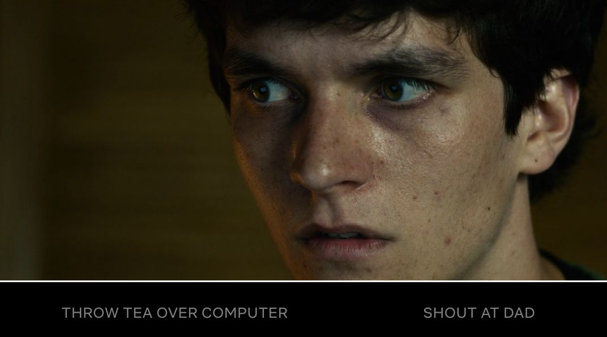
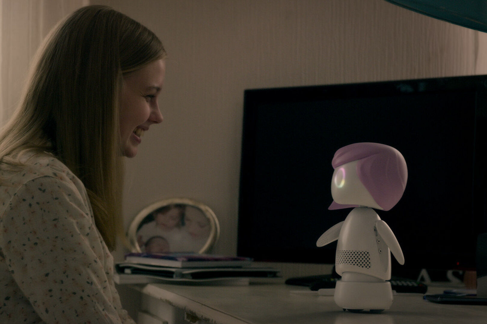

 Black Mirror é uma série inglesa inspirada em outras antologias de sucesso para a telinha como Além da Imaginação. Lidando com temas controversos e contemporâneos, os episódios se focam em temas de ficção-cientifica, especialmente no impacto da tecnologia na sociedade e a relação entre ambas.
A série se tornou tão popular que a Netflix a comprou em 2015, após as duas primeiras temporadas de grande sucesso. Entretanto, Black Mirror já recebeu vários prêmios, especialmente os episódios San Juniper e USS Callister.
Lançada em 2011 na Inglaterra — e agora disponível pela Netflix nos Estados Unidos e no Brasil —, Black Mirror trata da nossa relação com a tecnologia, das perversas regras do capitalismo, do poder e da sociedade do espetáculo, e as possíveis — e bem prováveis — consequências sobre as relações humanas (muitas já acontecendo). O físico e o virtual se confundem. Não precisaremos mais de câmeras, nossos olhos servirão como lentes e um chip instalado no nosso cérebro gravará TUDO o que a gente vê, e todas as memórias serão salvas numa timeline, que você poderá acessar infinitamente quando quiser e, inclusive, mostrar para os amigos numa tela de TV (sabe aquele momento em que você conta uma história e fica procurando a foto para mostrar o que viu? não será mais preciso, você pode mostrar a cena INTEIRA); poderemos bloquear pessoas ao vivo, quando não quiser mais escutar e ser escutado, ver e ser visto; ou ainda fazer uma cópia não só do seu cérebro mas da sua personalidade, criando um novo eu salvo num chip que, além de comandar todos os gadgets da casa, servirá como seu secretário (ele já vai saber o ponto que você gosta da torrada, a temperatura certa da água do banho, o jeito que você gosta de acordar, já que é você mesmo – ou seja, o secretário perfeito); e até encomendar um avatar — físico — de um falecido que, programado com o histórico de dados de suas redes sociais quando vivo, parecerá, falará e interagirá como ele mesmo. Não é preciso assistir a Black Mirror em sequência ou seguindo a cronologia de lançamento: cada episódio é um filme independente, com um elenco diferente, em épocas diferentes.





